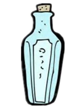

Part 2
 In order to praise
(奖励)
Hou Yi, the Heavenly Queen
(王母娘娘)
gave him a bottle of magic liquid
(神奇的药水)
.
Anyone drinking the liquid would be immortal
(长生不老的)
.
Hou Yi asked his wife______ to look after
(保管)
it.